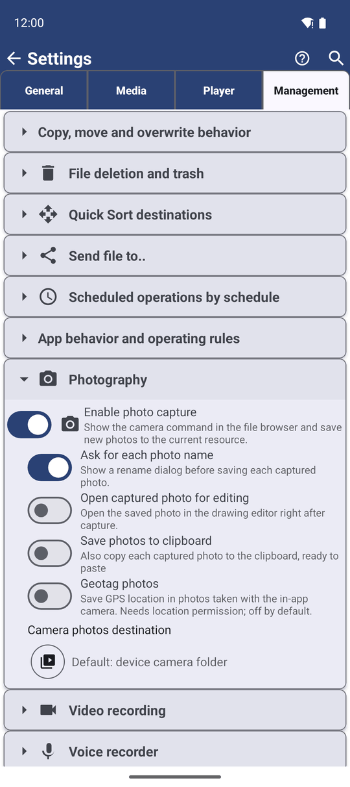
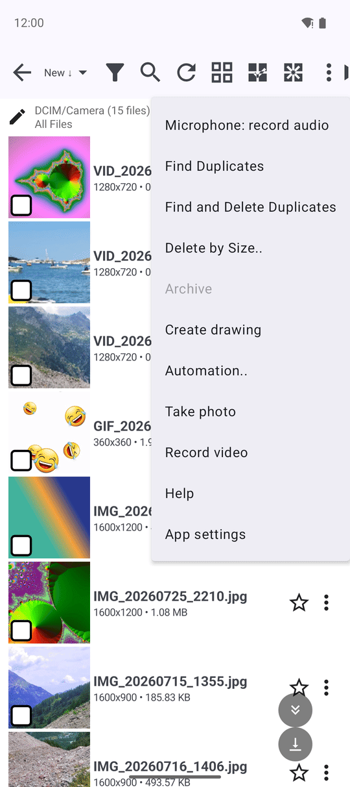

Сохранение фото, видео и аудиозаметок прямо в выбранную папку
Делайте фото, записывайте видеоролики и надиктовывайте аудиозаметки прямо из нужной папки с автоматическим сохранением на месте - на телефоне, сетевом диске или в облаке - используя удобный виджет быстрого диктофона и буфер обмена для мгновенной отправки.
Почему вам это понравится
Вы раскладываете чеки по папке «Налоги 2026», и один чек остался на бумаге. Обычный путь - открыть камеру, сфотографировать, найти снимок в общей галерее и переместить. В FastMediaSorter вы делаете снимок прямо из нужной папки, и он сохраняется точно на своё место - даже если эта папка находится на компьютере дома или на Google Диске.
Точно так же это работает для коротких видеороликов и голосовых заметок, а виджет на рабочем столе позволяет записать мысль в одно касание без открытия приложения.
- ✓ FastMediaSorter в редакциях Standard, noLegal, Legacy или VR. Виджет «Быстрый диктофон» доступен в Standard и Legacy.
- ✓ Разрешение на доступ к камере, а для аудиозаметок - к микрофону. Приложение запрашивает их при первом обращении.
- ✓ Целевой ресурс с правом на запись (при отсутствии выбранного места фото сохраняются в папку камеры телефона, а аудиозаметки - в «Загрузки»).
Включение команд съёмки и записи
Откройте Настройки, вкладку Управление:
- В блоке Фотосъёмка включите Включить съёмку фото — «Отображать команду камеры в файловом браузере и сохранять новые снимки в текущий ресурс».
- В блоке Видеозапись включите Включить запись видео.
- В блоке Диктофон включите Включить запись звука с микрофона. Если доступ к микрофону ещё не выдан, Android покажет системный запрос.
В каждом блоке также есть кнопка Выбрать ресурс... Указанное там место используется по умолчанию, когда съёмка происходит вне конкретной папки (например, через виджет рабочего стола).

Съёмка фотографии прямо в открытую папку
Откройте нужную папку в файловом браузере, вызовите меню с тремя точками и нажмите Снять фото. Сделайте снимок — он сохранится прямо в эту папку:
- В локальную папку на смартфоне — напрямую в неё.
- В сетевую папку или облачное хранилище — сразу загрузится на удалённый ресурс.
- Во встроенную системную коллекцию («Фото с камеры» или «Все изображения») — в стандартную папку камеры устройства.
При включённой опции Запрашивать имя для каждого фото вы сможете задать имя кадру до сохранения. Опция Открывать снимок в редакторе сразу передаёт кадр в редактор рисунков для добавления пометок или обводки. Пункт Геотеги для фото записывает координаты съёмки в EXIF (требует разрешения на доступ к геолокации).

Запись видеоролика в открытую папку
В этом же меню нажмите Записать видео. Готовый ролик запишется в текущую папку по тем же правилам, что и фотографии. Если включён параметр Открывать видео в плеере, воспроизведение начнётся сразу по окончании записи, позволяя моментально оценить результат.
Запись голосовой аудиозаметки
В файловом браузере нажмите и удерживайте кнопку с микрофоном (Запись звука, «Удерживайте для записи») и надиктуйте текст. Отпустите кнопку для остановки. На узких экранах, если кнопка не помещается на панели, она перемещается в меню с тремя точками как пункт Запись звука — там запись запускается одним касанием.
При включённом параметре Запрашивать имя файла окно Сохранение записи предложит ввести название заметки. Запись сохраняется в формате .m4a в папку, заданную в настройках диктофона, либо в текущую открытую папку, либо в «Загрузки».
Слишком короткое нажатие отменяет запись без сохранения («Запись отменена»). Входящий телефонный звонок или перехват звука другой программой также мягко останавливают запись с сохранением уже надиктованного фрагмента.
Запись в один клик с рабочего стола — виджет «Быстрый диктофон»
*Редакции Standard и Legacy.*
Добавьте виджет Быстрый диктофон на домашний экран Android: зажмите свободное место на рабочем столе, выберите Виджеты, найдите FastMediaSorter и перетащите виджет на экран.
Во время записи в строке уведомлений отображается статус «Идёт запись..» с кнопкой Остановить. Завершить запись можно как нажатием на сам виджет, так и из уведомления. Заметка сохраняется в настроенный ресурс для диктофона или в системную папку аудиозаписей.
Рабочий экран смартфона с размещённым виджетом диктофона и идущей аудиозаписью.
Мгновенная вставка нового снимка в мессенджер
Включите настройку Сохранять фото в буфер обмена в блоке «Фотосъёмка» — «Также копировать каждый сделанный снимок в буфер обмена для быстрой вставки». Любой кадр, сделанный камерой приложения, будет автоматически скопирован в буфер обмена в полном качестве. Переключитесь в мессенджер, зажмите поле ввода сообщения и нажмите Вставить — фото сразу прикрепится к сообщению, сохранившись при этом в нужной папке на диске.
Если целевая папка временно недоступна
Снимок, видеоролик или аудиозаметка никогда не пропадут из-за временных проблем со связью. Если загрузка на сетевой диск или в облако не удалась, приложение сохранит файл локально на телефон (фото — в DCIM/Camera, видео — в Movies, аудио — в Music) с понятным сообщением: «Сохранено в DCIM/Camera — Компьютер недоступен». Вы сможете переместить файл в целевую папку позже, когда восстановится связь.
Что вы получите
Фотография чека сразу лежит в папке «Налоги 2026», видео с ремонтом отправлено в общую папку на домашнем ПК, а внезапная мысль на прогулке сохранена как аудиозаметка в папке заметок - без блужданий по общей галерее.
Советы и решение проблем
- Сортируйте прямо во время съёмки. Откройте целевую папку заранее и сделайте снимок - вам больше никогда не придётся искать и перемещать эти файлы вручную.
- Широкие возможности камеры. Таймер, режимы съёмки и распознавание текста подробно описаны в рецепте Быстрая съёмка фото и видеокадров.
- Буфер обмена не заменяет хранилище. В буфере обмена остаётся только последний кадр, в то время как сохранённый на диск файл остаётся навсегда.